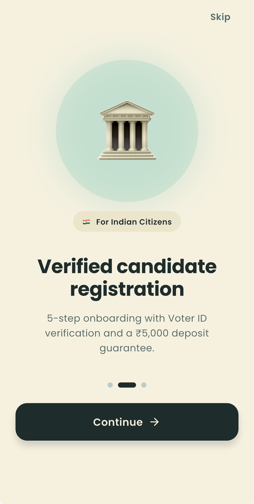
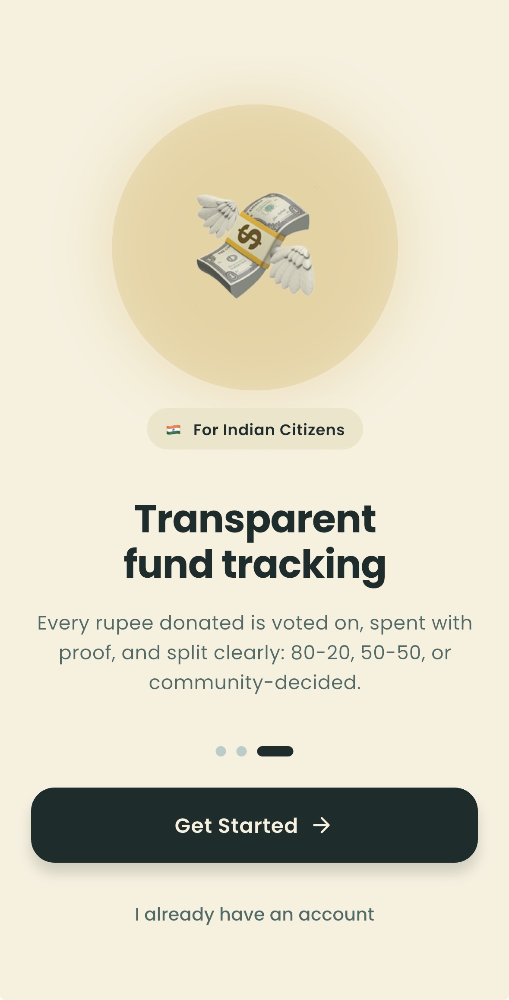
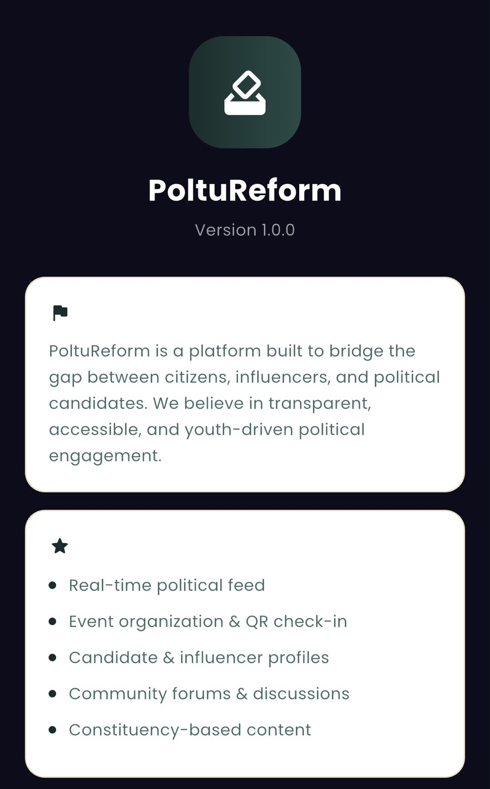

Contest elections for free. Back the candidates you believe in. Track every rupee — transparently.
Across India, capable people sit out elections because the cost of entry — not the cost of ideas — keeps them out.
Your constituency, your candidates, your donations — all in one place.



Every feature gives the general public real ownership of who represents them.
Whether you're voting with your wallet, running for office, or rallying your audience — there's a path built for you.
Built in public, one milestone at a time.
We build in public. Walkthroughs, updates, and behind-the-scenes on our channels.
Development milestones, announcements, and thinking behind the platform.
The things people usually want to know before they sign up.
PoltuReform launches soon. Join the waitlist and we'll notify you the moment the app is ready.